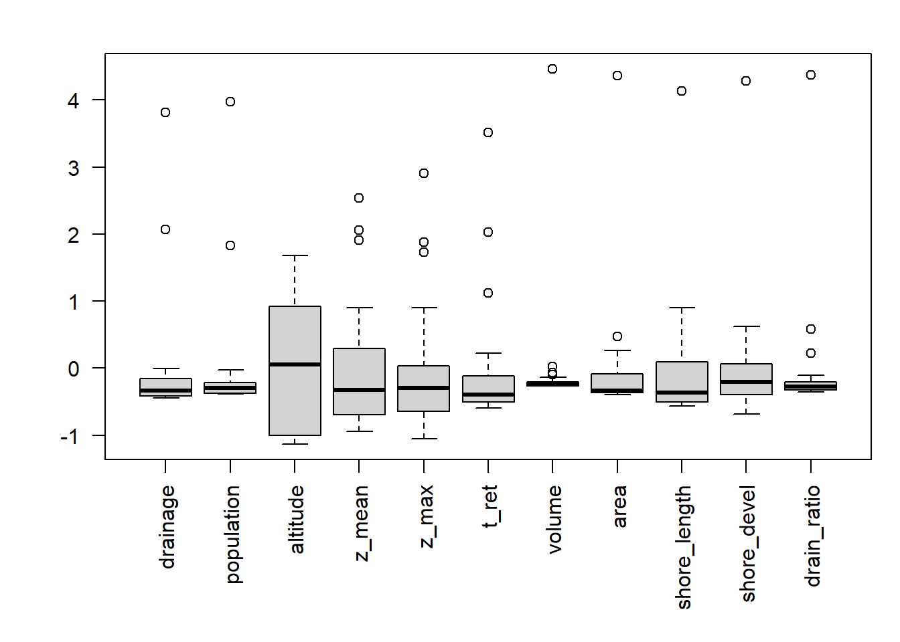
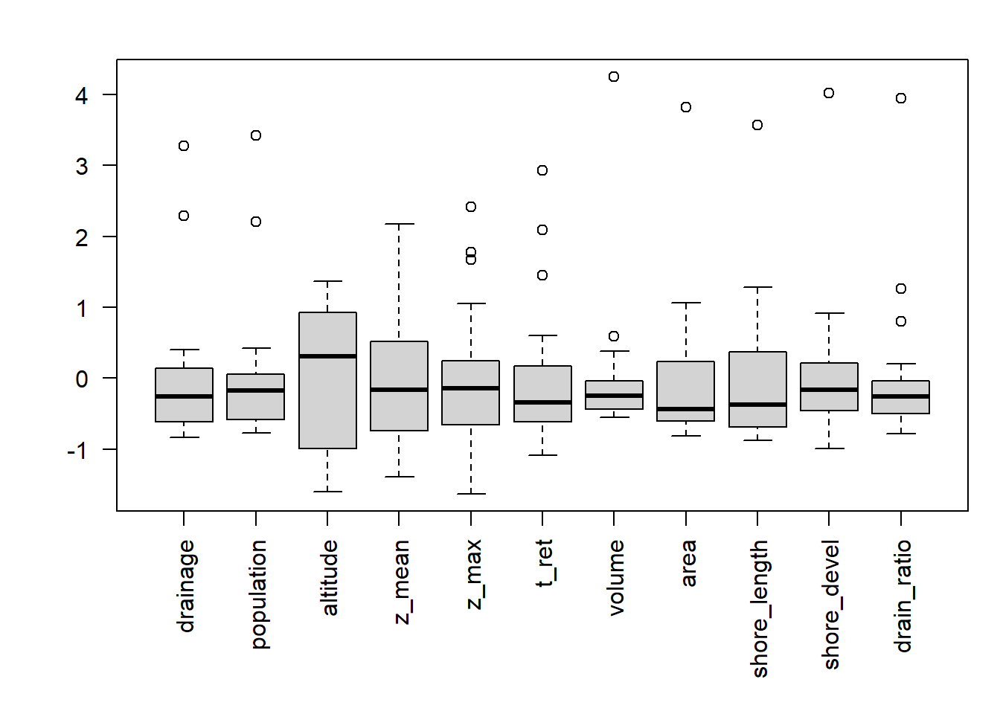
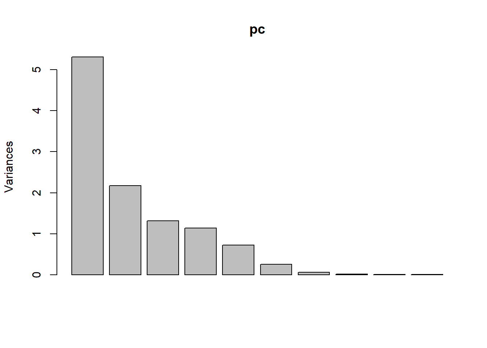
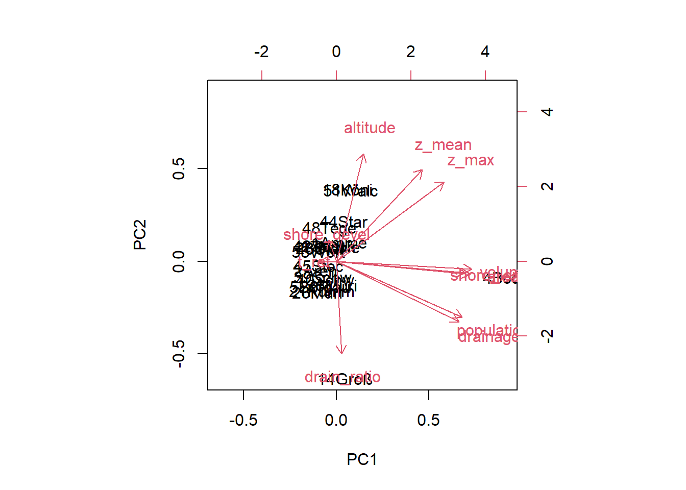
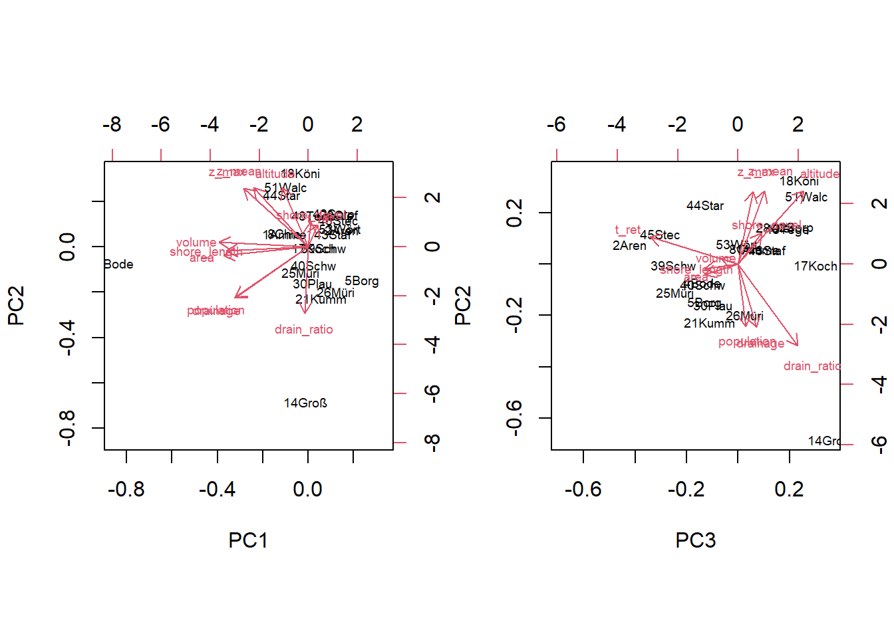
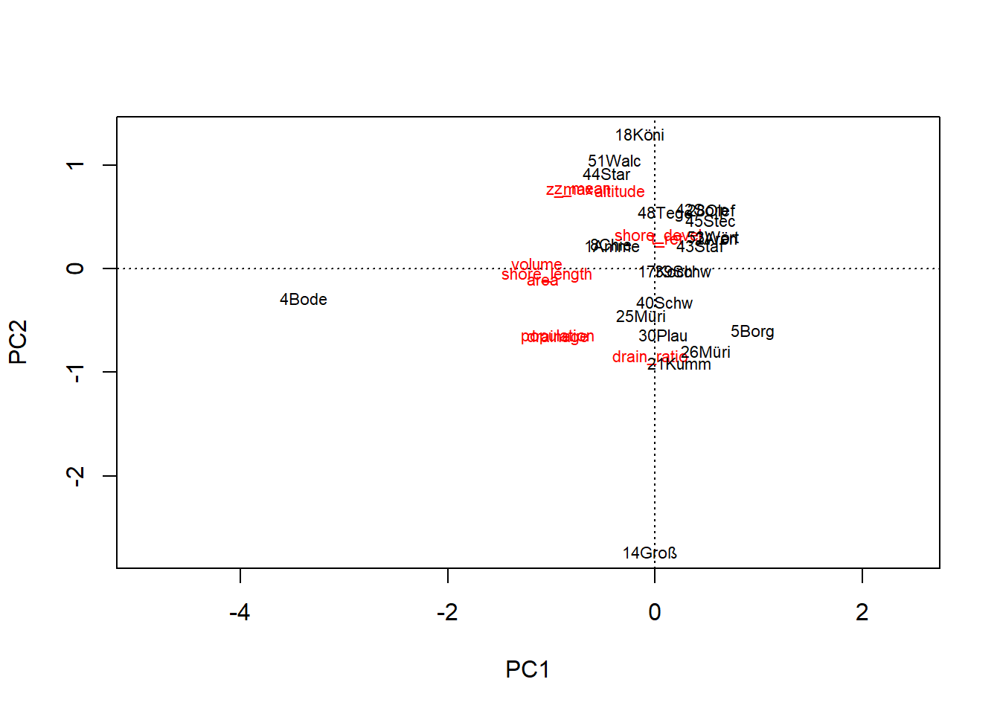
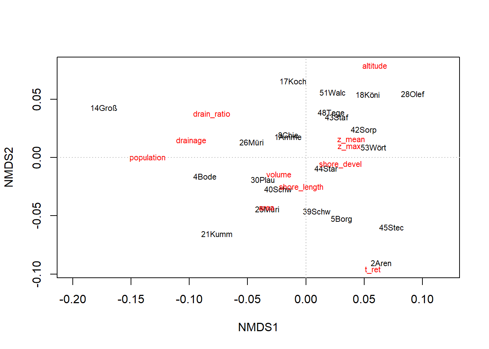
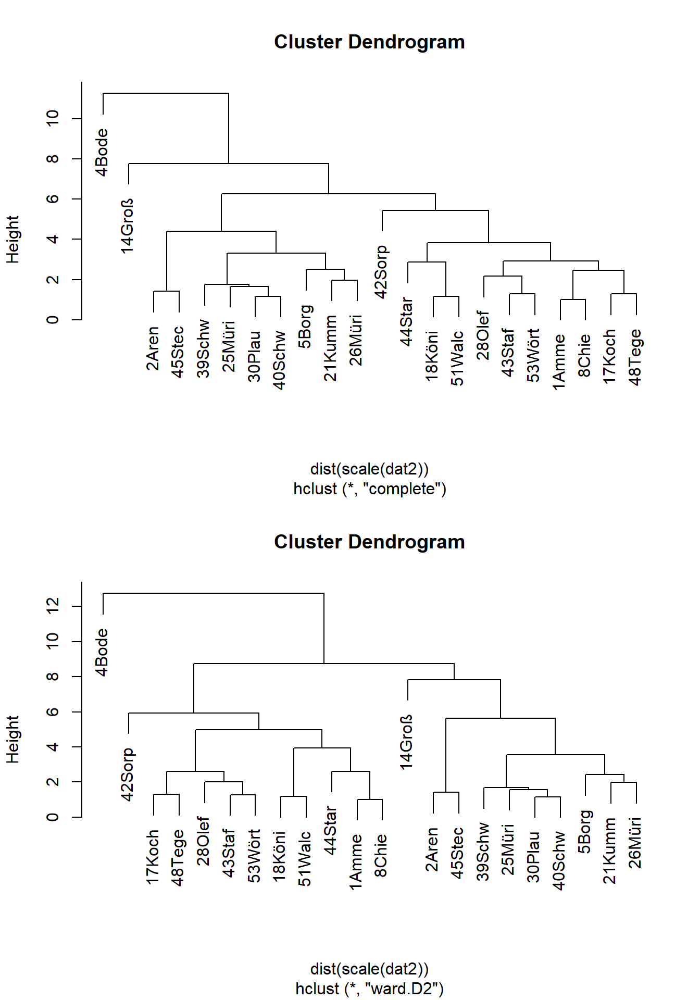
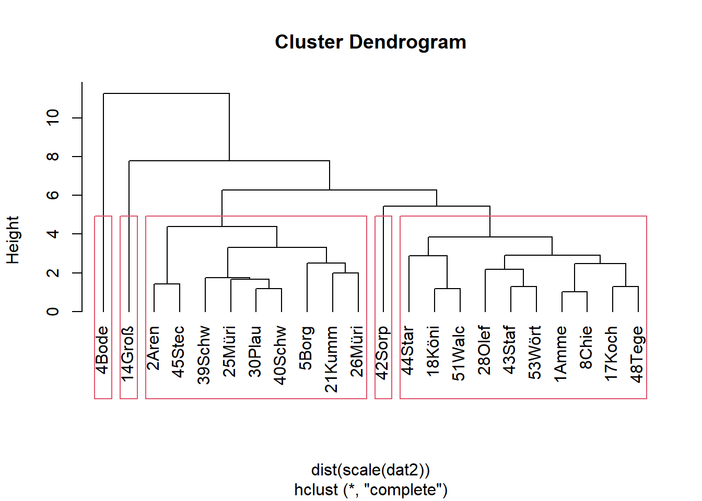
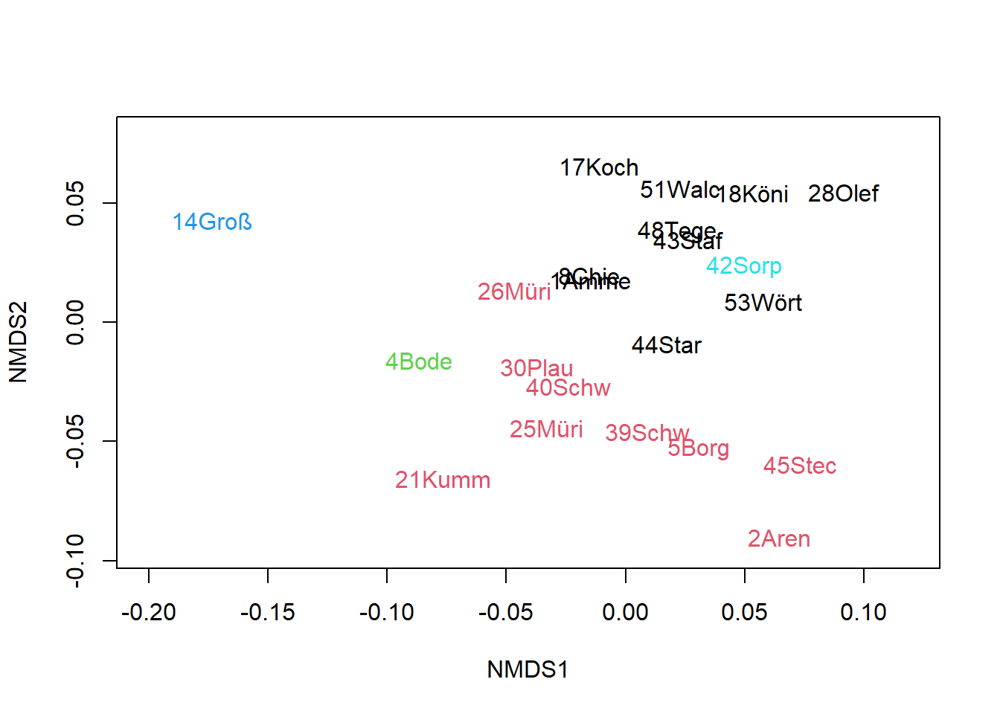

library("readxl") # read Excel files directly
library("vegan") # multivariate statistics in ecology
lakes <- as.data.frame(
read_excel("../data/uba/3_tab_kenndaten-ausgew-seen-d_2021-04-08.xlsx", sheet="Tabelle1", skip=3)
)
names(lakes) <- c("name", "state", "drainage", "population", "altitude",
"z_mean", "z_max", "t_ret", "volume", "area", "shore_length",
"shore_devel", "drain_ratio", "wfd_type")
rownames(lakes) <- paste0(1:nrow(lakes), substr(lakes$name, 1, 4))Multivariate Lake Data Example
Applied Statistics – A Practical Course
1 Introduction
The following example demonstrates basic multivariate principles by means of a teaching example. A detailed description of theory and applications is found in excellent books of Legendre & Legendre (1998) and Borcard et al. (2018). Practical help is found in the tutorials of the vegan package (Oksanen et al., 2020).
2 Data set and terms of use
The lake data set originates from the public data repository of the German Umweltbundesamt (Umweltbundesamt, 2021). The data set provided can be used freely according to the terms and conditions published at the UBA web site, that refer to § 12a EGovG with respect of the data, and to the Creative Commons CC-BY ND International License 4.0 with respect to other objects directly created by UBA.
The document and codes provided here can be shared according to CC BY 4.0.
3 Load the data
Here we load the data set and add English column names and abbreviated lake identifiers as row names to the table, that are useful for the multivariate plotting functions.
Text columns, e.g Federal State names and lake type are removed and rows with missing data excluded. If population is not used, the analysis can be repeated with more lakes.
valid_columns <- c("drainage", "population", "altitude", "z_mean",
"z_max", "t_ret", "volume", "area", "shore_length",
"shore_devel", "drain_ratio")
#valid_columns <- c("drainage", "altitude", "z_mean",
# "z_max", "t_ret", "volume", "area", "shore_length",
# "shore_devel","drain_ratio")
dat <- lakes[valid_columns]
dat <- na.omit(dat)4 Data inspection
It is alwas a good idea to plot the data first, as time series or boxplots for example, dependingon the type of data. Here we use boxplots, that we scale (z-transform) to a mean zero and standard deviation one to have comparable values.
As we can see a number of high extreme values, we apply also a square root transformation, that is less extreme than log transform and not sensitive against zero values, but because altitude contains a negative value (below sea level) we replace this with zero. As it is a small value, it does not influence our analysis, but we should always be very careful to document such workarounds.
par(mfrow = c(1, 1))
par(mar = c(7, 4, 2, 1) + .1)
boxplot(scale(dat), las = 2)
dat$altitude <- ifelse(dat$altitude < 0, 0, dat$altitude)
boxplot(scale(sqrt(dat)), las=2)
5 Multivariate Analysis
5.1 Principal Components: PCA
pc <- prcomp(scale(dat))
summary(pc)Importance of components:
PC1 PC2 PC3 PC4 PC5 PC6 PC7
Standard deviation 2.305 1.4737 1.1459 1.0686 0.84953 0.50024 0.24164
Proportion of Variance 0.483 0.1974 0.1194 0.1038 0.06561 0.02275 0.00531
Cumulative Proportion 0.483 0.6805 0.7998 0.9036 0.96925 0.99200 0.99731
PC8 PC9 PC10 PC11
Standard deviation 0.12590 0.08400 0.07563 0.03077
Proportion of Variance 0.00144 0.00064 0.00052 0.00009
Cumulative Proportion 0.99875 0.99939 0.99991 1.00000plot(pc)
biplot(pc)
As the PCA with the untransformed data looks somewhat asymmetric, we repeat it with square transformed data. In addition, also the 3rd PC is plotted.
dat2 <- sqrt(dat)
pc2 <- prcomp(scale(dat2))
summary(pc2)Importance of components:
PC1 PC2 PC3 PC4 PC5 PC6 PC7
Standard deviation 2.1886 1.5906 1.2499 1.0634 0.79782 0.44854 0.28572
Proportion of Variance 0.4354 0.2300 0.1420 0.1028 0.05786 0.01829 0.00742
Cumulative Proportion 0.4354 0.6654 0.8075 0.9103 0.96812 0.98641 0.99383
PC8 PC9 PC10 PC11
Standard deviation 0.17665 0.13833 0.12041 0.05528
Proportion of Variance 0.00284 0.00174 0.00132 0.00028
Cumulative Proportion 0.99666 0.99840 0.99972 1.00000par(mfrow=c(1,2))
par(mar=c(5, 4, 4, 2) + 0.1)
biplot(pc2, cex=0.6)
biplot(pc2, cex=0.6, choices=c(3, 2))
A PCA is also possible with the rda function of the vegan package. The syntax of the plot functions is somewhat different. Instead of biplot as above, we can directly use plot. Details are found in the vegan documentation.
par(mfrow=c(1,1))
pc3 <- rda(dat2, scale = TRUE)
pc3Call: rda(X = dat2, scale = TRUE)
Inertia Rank
Total 11
Unconstrained 11 11
Inertia is correlations
Eigenvalues for unconstrained axes:
PC1 PC2 PC3 PC4 PC5 PC6 PC7 PC8 PC9 PC10 PC11
4.790 2.530 1.562 1.131 0.637 0.201 0.082 0.031 0.019 0.014 0.003 #summary(pc3)
plot(pc3)
5.2 Nonmetric Multidimensional Scaling: NMDS
Lt’s now perform an NMDS for the data set. Function metaMDS runs a series of NMDS fits with different start values to avoid local minima. It has also some automatic transformations built in and works usually with the Bray-Curtis dissimilarity, that is used for plants and animal species abundance data. As we work with physical data here, we set the distance measure to “euclidean”.
md <- metaMDS(dat2, scale = TRUE, distance = "euclid")Square root transformation
Wisconsin double standardization
Run 0 stress 0.1181117
Run 1 stress 0.1230331
Run 2 stress 0.1768603
Run 3 stress 0.1181116
... New best solution
... Procrustes: rmse 0.0001096059 max resid 0.0003064521
... Similar to previous best
Run 4 stress 0.1181118
... Procrustes: rmse 0.0002047576 max resid 0.000586677
... Similar to previous best
Run 5 stress 0.1207019
Run 6 stress 0.2099927
Run 7 stress 0.1207022
Run 8 stress 0.1181116
... Procrustes: rmse 5.028569e-05 max resid 0.0001415644
... Similar to previous best
Run 9 stress 0.1230331
Run 10 stress 0.1230331
Run 11 stress 0.1181117
... Procrustes: rmse 0.0001039214 max resid 0.0002891055
... Similar to previous best
Run 12 stress 0.1230331
Run 13 stress 0.1208973
Run 14 stress 0.1230331
Run 15 stress 0.1181117
... Procrustes: rmse 9.38382e-05 max resid 0.0002579103
... Similar to previous best
Run 16 stress 0.1230331
Run 17 stress 0.1207022
Run 18 stress 0.1181117
... Procrustes: rmse 7.544484e-05 max resid 0.0002098043
... Similar to previous best
Run 19 stress 0.1181116
... New best solution
... Procrustes: rmse 1.526402e-05 max resid 3.08341e-05
... Similar to previous best
Run 20 stress 0.1230331
*** Best solution repeated 1 timesplot(md, type="text")
abline(h=0, col="grey", lty="dotted")
abline(v=0, col="grey", lty="dotted")
5.3 Cluster analysis
Here we apply a hierarchical cluster analysis with square root transformed data and two different agglomeration schemes, “complete linkage” and “Ward’s method”.
par(mfrow=c(2,1))
hc <- hclust(dist(scale(dat2)), method="complete") # the default
plot(hc)
hc2 <- hclust(dist(scale(dat2)), method="ward.D2")
plot(hc2)
We can also use the clusters to indicate groups in the NMDS plot. Function rect.hclust indicates a given number of clusters in the dendrogram, then we cut the tree with cutree and use the groups grp as color codes. R has 8 standard colors. If we need more, we can define an own palette.
plot(hc, hang = -1)
rect.hclust(hc, 5)
grp <- cutree(hc, 5)
# grp # can be used to show the groups
plot(md, type = "n")
text(md$points, row.names(dat2), col = grp)
Instead of hierarchical clustering, we can also use a non-hierarchical method, e.g. k-means clustering. This is an iterative method, and avoids the problem that cluster assignment depends on the order of clustering and the agglomeration method.
Depending on the question, it may be a disadvantage, that the number of clusters needs to be specified beforehand (e.g. from hierarchical clustering) and that we do not get a tree diagramm.
6 Task
- Try to understand the analysis,
- discuss the results,
- ask questions.
- The idea is to work on this report together and to make it more complete.
7 References
Borcard, D., Gillet, F., & Legendre, P. (2018). Numerical Ecology with R. Springer International Publishing. https://doi.org/10.1007/978-3-319-71404-2
Legendre, P., & Legendre, L. (1998). Numerical Ecology (2nd English ed.). Elsevier.
Oksanen, J., Blanchet, F. G., Friendly, M., Kindt, R., Legendre, P., McGlinn, D., Minchin, P. R., O’Hara, R. B., Simpson, G. L., Solymos, P., Stevens, M. H. H., Szoecs, E., & Wagner, H. (2020). Vegan: Community ecology package. https://CRAN.R-project.org/package=vegan
Umweltbundesamt. (2021). Kenndaten ausgewählter Seen Deutschlands. https://www.umweltbundesamt.de/daten/wasser/zustand-der-seen#okologischer-zustand-der-seen